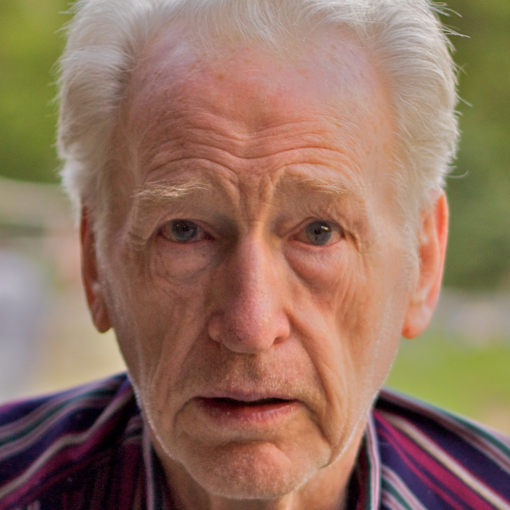
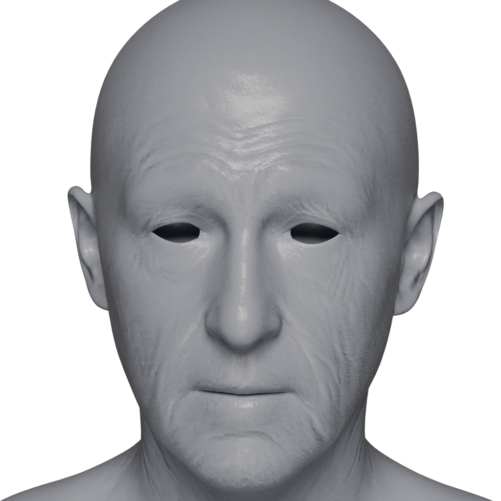
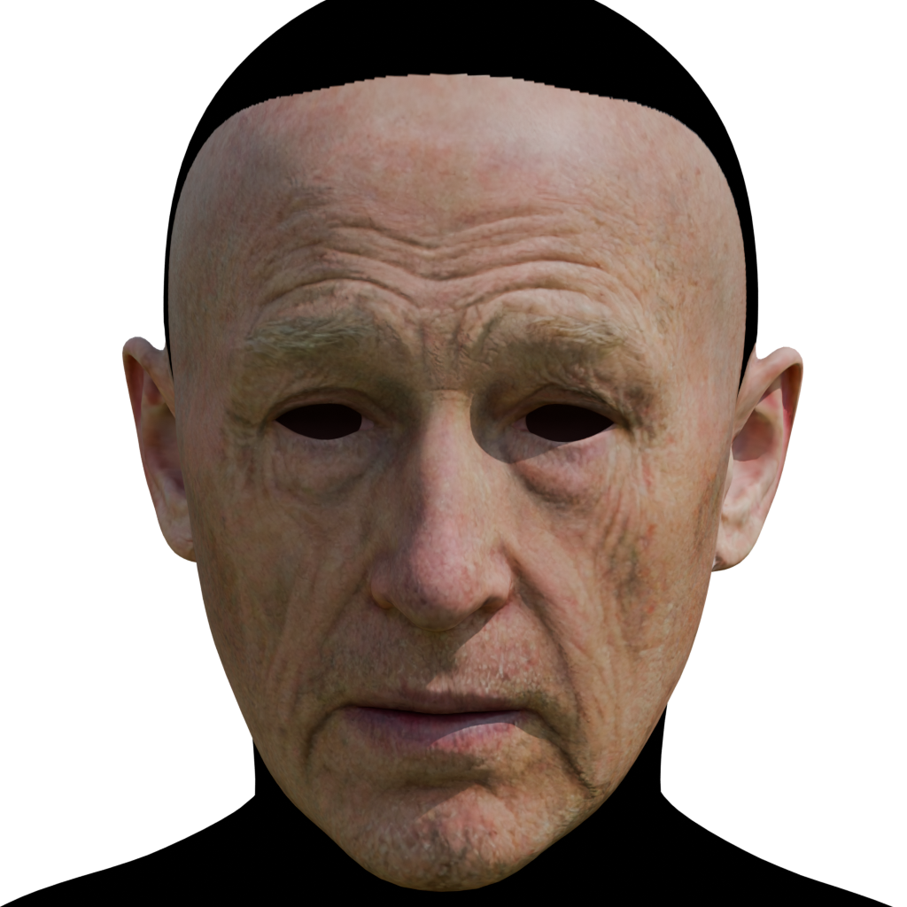
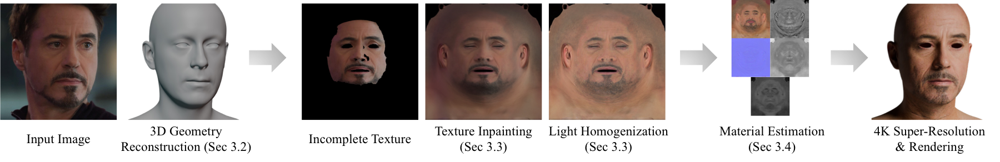
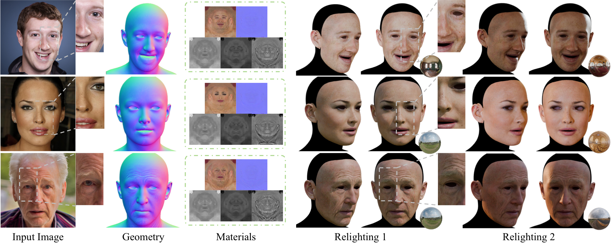
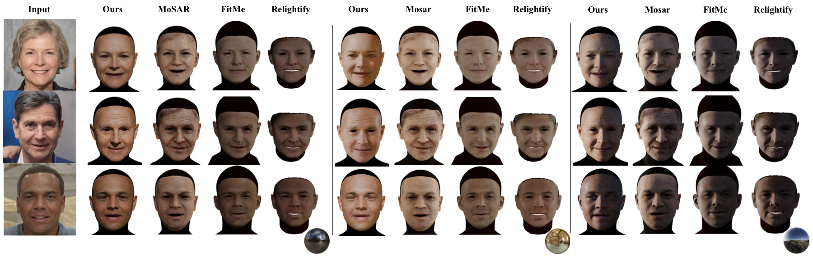
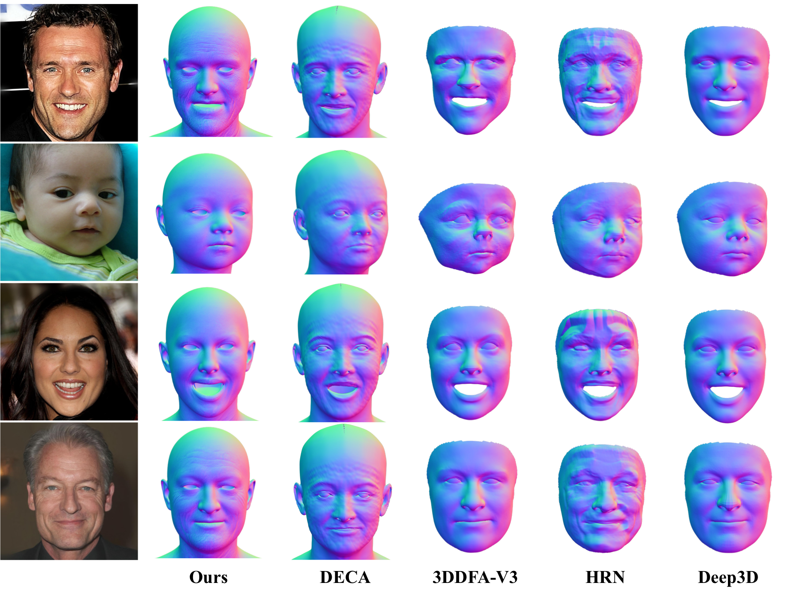

Supplement assets, not screenshots
The gallery below visualizes GLB exports converted directly from the supplementary Blender files.
ECCV 2026
MARCUS-Avatar turns a single portrait into a relightable 3D avatar with render-ready geometry and physically meaningful intrinsic materials.



The gallery below visualizes GLB exports converted directly from the supplementary Blender files.
Full material mode preserves the exported PBR-style appearance, while gray geometry mode removes albedo color to reveal surface detail.
A Blender batch script in this repository regenerates these web assets from the original supplement folder.
Supplementary 3D Assets
Each example is exported from supp/exported_blender_files_1K/modelN.blend with its matching
input image. Switch between the full material view and a gray geometry view for detail inspection.
3D viewer or model failed to load. Please check WebGL support and GLB access.
Pipeline
The paper pipeline combines geometry alignment, UV-space texture completion, light homogenization, intrinsic material generation, and UV-space differentiable shading.

Paper Figures



Resources
@inproceedings{marcusavatar2026,
title = {Monocular Avatar Reconstruction via Cascaded Diffusion Priors and UV-Space Differentiable Shading},
author = {Anonymous Authors},
booktitle = {European Conference on Computer Vision},
year = {2026}
}